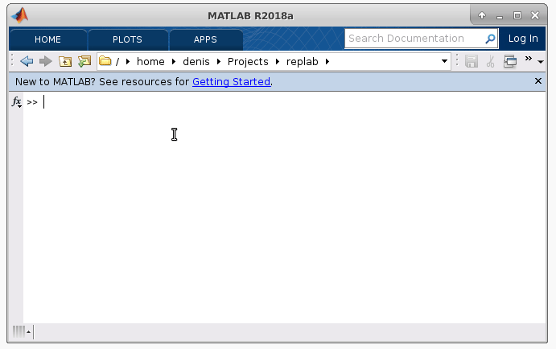

Our ambition for RepLAB is two-fold: reduce the complexity of hard problems using their symmetries (we used it in published results), and provide as well an accessible tool to teach group and representation theory.
Until now, no immediately accessible tool was available for beginners in those topics. GAP System and SageMath are pretty incredible pieces of software, but they do not directly integrate with environments used in the first year of undergraduate teaching. RepLAB can provide that experience, and be used to explore group representations numerically in the MATLAB/Octave environment familiar to students.
